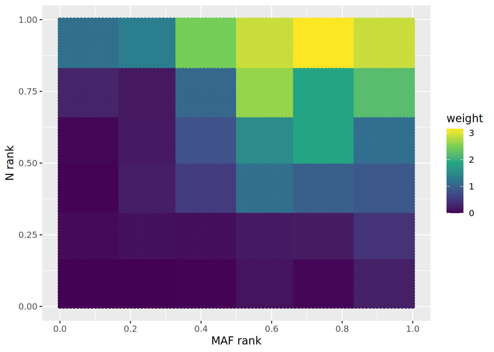
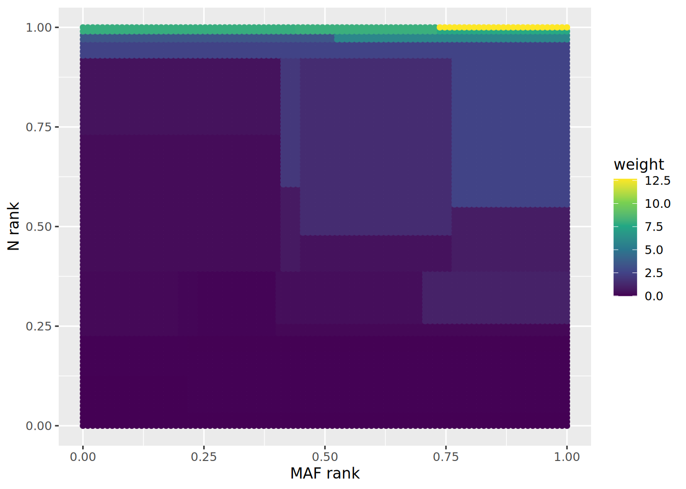
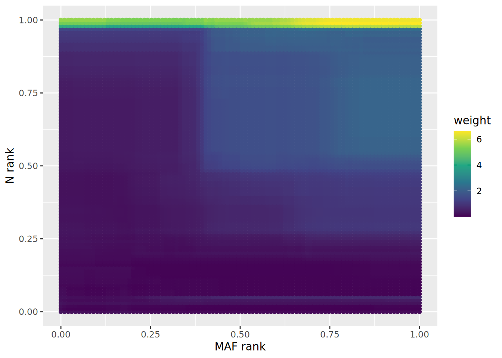

library("dplyr")
library("reshape2")
library("ggplot2")
library(here)
library(purrr)
#devtools::load_all("/Users/default/Google Drive/currentDocumants/research/2022_IHW-Forest/Code/IHW")
devtools::load_all("../../IHW")
#devtools::load_all("../IHWForestPaper")
options(bitmapType ="cairo")plot_smooth_weight
#myPalette <- colorRampPalette(rev(RColorBrewer::brewer.pal(11, "Spectral")))#ylorrdload data
load(here("boca_leek/BMI_GIANT_GWAS.RData"))
BMI_GIANT_GWAS <- BMI_GIANT_GWAS %>%
select(refsnp_id, p, minor_allele_freq, N)BMI_GIANT_GWAS <- BMI_GIANT_GWAS %>%
mutate(N_rank = rank(N, ties.method = "first")/n(),
minor_allele_freq_rank = rank(minor_allele_freq, ties.method = "first")/n())generate evaluating data to plot on grid
m_eval <- 100
data_eval <- expand.grid(
minor_allele_freq = seq(min(BMI_GIANT_GWAS$minor_allele_freq), max(BMI_GIANT_GWAS$minor_allele_freq), length.out = m_eval),
N = seq(min(BMI_GIANT_GWAS$N), max(BMI_GIANT_GWAS$N), length.out = m_eval))
data_eval <- data_eval %>%
mutate(p = runif(m_eval^2))combine both
data_train_eval <- plyr::rbind.fill(BMI_GIANT_GWAS, data_eval)
data_train_eval$folds <- c(rep(1, nrow(BMI_GIANT_GWAS)), rep(2, nrow(data_eval)))
head(data_train_eval) refsnp_id p minor_allele_freq N N_rank minor_allele_freq_rank
1 rs10 0.55830 0.01937 154683 0.02547122 0.02248841
2 rs1000000 0.98140 0.16570 233572 0.34917872 0.35790895
3 rs10000010 0.43840 0.42830 339148 0.99750599 0.87892895
4 rs10000012 0.07009 0.13980 236095 0.71471690 0.29384718
5 rs10000013 0.02558 0.13300 236048 0.66000724 0.27658029
6 rs10000017 0.39840 0.11380 235308 0.42887644 0.22746763
folds
1 1
2 1
3 1
4 1
5 1
6 1data_train_eval <- data_train_eval %>%
group_by(folds) %>%
mutate(N_rank = rank(N, ties.method = "first")/n(),
minor_allele_freq_rank = rank(minor_allele_freq, ties.method = "first")/n())Basic analysis
hist(BMI_GIANT_GWAS$N, breaks = 200)table_frequency <- table(BMI_GIANT_GWAS$N)
table_frequency <- sort(table_frequency, decreasing = TRUE)
table_frequencyHyperparameters
nbins <- 5Quantile
Add groups deterministically for nicer plots
if(file.exists("data_plot_weights/ihw_quantiles.Rds")){
ihw_quantiles <- readRDS("data_plot_weights/ihw_quantiles.Rds")
} else{
ihw_quantiles <- ihw(formula = p ~ minor_allele_freq_rank + N_rank,
data = BMI_GIANT_GWAS,
alpha = 0.1,
stratification_method = "quantiles",
seed = 1)
saveRDS(ihw_quantiles, "data_plot_weights/ihw_quantiles.Rds")
}plot_weights_quantile_2d(ihw_quantiles) +
xlab("MAF rank") +
ylab("N rank") +
scale_color_viridis_c()#+ trans = "log"
Tree
if(file.exists("data_plot_weights/ihw_tree.Rds")){
ihw_tree <- readRDS("data_plot_weights/ihw_tree.Rds")
} else{
ihw_tree <- ihw(formula = p ~ minor_allele_freq_rank + N_rank,
data = data_train_eval,
alpha = 0.1,
stratification_method = "forest",
folds = data_train_eval$folds,
ntrees = 1,
n_censor_thres = 1,
nodedepth = 5,
nodesize = 1000,
seed = 1)
saveRDS(ihw_tree, "data_plot_weights/ihw_tree.Rds")
}ihw_tree_df_eval <- ihw_tree@df %>%
filter(fold == 2) %>%
mutate(covariate.1.order = order(covariate.1)/n(),
covariate.2.order = order(covariate.2)/n())ggplot(ihw_tree_df_eval, aes(x = covariate.1, y = covariate.2, color = weight))+
geom_point() +
#scale_colour_gradientn(colours = myPalette(100)) +
xlab("MAF rank") +
ylab("N rank") +
scale_color_viridis_c()
Forest
if(file.exists("data_plot_weights/ihw_forest.Rds")){
ihw_forest <- readRDS("data_plot_weights/ihw_forest.Rds")
} else{
ihw_forest <- ihw(formula = p ~ minor_allele_freq_rank + N_rank,
data = data_train_eval,
alpha = 0.1,
stratification_method = "forest",
folds = data_train_eval$folds,
ntrees = 10,
n_censor_thres = 3,
nodedepth = 5,
nodesize = 1000,
seed = 1)
saveRDS(ihw_forest, "data_plot_weights/ihw_forest.Rds")
}ihw_forest_df_eval <- ihw_forest@df %>%
filter(fold == 2) %>%
mutate(covariate.1.order = order(covariate.1)/n(),
covariate.2.order = order(covariate.2)/n())ggplot(ihw_forest_df_eval, aes(x = covariate.1, y = covariate.2, color = weight))+
geom_point() +
#scale_colour_gradientn(colours = myPalette(100)) +
xlab("MAF rank") +
ylab("N rank") +
scale_color_viridis_c()